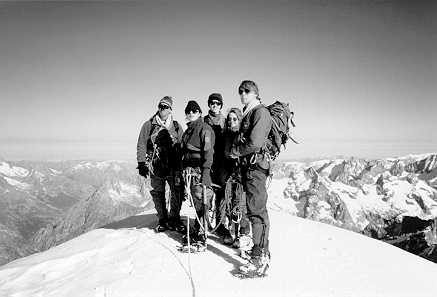

I'll begin at the beginning, which is usually a good place to start. After an epic trip to Chamonix, with Leyla's car bulging at the seams, we all met up at Leyla's house. I had already spent half the day wandering around Chamonix and the other half sleeping after the excitement of England's exit from the European cup the day before. The first notable event occurred the next morning when Leyla went to get the car - after a suitable delay she arrived back at the house to announce that the car was stuck in the garage with a brand new dent in the side. Matt and I helped navigate the car (sorry, tank) out of its bay with no further damage, and we set off - with an extra person this time. Fun. A somewhat cramped journey ended in Ailfroide, where we found a fly-infested campsite and waved goodbye to Martin and Leyla, who went off to have their own epics. After a brief exploration of the area (including a play on some bolted routes we found - complete with epic gully descent in the dark for me and Phil) we went to bed. Matt had by this time convince Elika to sleep in his tent rather than Caroline's, and Phil and I spent the rest of the evening wondering whether this was significant (as we thought) or not (as we were assured later). We fell asleep to the sound of giggles.
The day after was hot. Damn hot. Having acquired a guide to the local bolted crags, we spent the day on a flawless slab of granite becoming (in some cases) quite nicely toasted. Matt's quick tip for the day - kicking the rock in frustration when you fall off doesn't make the route any easier, although it does give you an impressively sore toe. After a day's climbing we met Steve, our guide for the next few days (and "the first guide Leyla ever fell in love with"). The evening was notable for a "lively discussion" on whether it was necessary to drain tins of tuna before throwing them in the meal, which resulted in a complete ban on me cooking unsupervised in future and was only lightened by Elika's distress on learning that Leyla had told us all her middle name.
So on to the mountaineering. Our first day with Steve was spent on the Glacier Blanc and involved learning how to use ice axes and crampons properly (as opposed to the bumbling around which most of us had done previously) and doing some climbing on the glacier itself. A day on rock in the valley followed - .html learning experience but this time on a superb route up the side of the valley, crossing two waterfalls on the way - lots of fun, and a bit different for added entertainment. Learning about crevasse rescue (from the top of a convenient boulder) followed, and then .html night in the campsite, where the flies reached hitherto unscaled heights in the irritation stakes. And so into the mountains...
The good weather we had enjoyed so far broke, and we trudged up to the Ecrins Refuge under grey skies and falling snow. By the time we got to the hut we were all utterly fed up, except Matt who had won his bet with Elika that the hut would sell cans of coke and thus kept up his record of (allegedly) not having been wrong about anything so far. The evening's arguments revolved around whether "Killing Me Softly" was a sexually tilted song or not (whatever that means) but were somewhat complicated by disagreement over what the alleged lyrics actually were. Matt was finally proved wrong on this one when we got back to the car stereo, and may even have admitted it by the time you read this. Good intentions of an early night were scuppered by a Frenchman with the most amazing snore that any of us had ever encountered. Although it masked the incessant giggles from the other end of the bunk, it was intolerable - as well as threatening serious structural damage to the building. After a brief argument, I was almost unanimously given the job of kicking the snorer, which produced variations in the pitch and tone of the noise but not, alas, in the volume. Phil, after "accidentally" kicking me a few times, was marginally more successful. Sleep eventually arrived.
The next day began with an indigestible breakfast of muesli, and soon afterwards we were roped up and beginning the trek up the glacier to the Barre des Ecrins. The sun rose in awesome style just as we left the fairly flat glacier and began the long slog up the slope to the Dom de Neige. Elika felt ill, Matt and I began a sustained campaign to try and get her to eat chocolate (which was unsuccessful) and I discovered that dried bananas which look like large slugs don't taste a lot better. Matt ate the lot over the next few days. The top of the Dom de Neige was finally gained, and Elika celebrated by depositing her breakfast on the summit of her first 4000m peak and promptly felt much better. While Elika and Caroline waited for us, Steve, Matt, Phil and I continued to the summit of the Barre des Ecrins via an exposed and spectacular ridge. By the time we began the long descent from the Dom de Neige, the snow had become soft and treacherous and I took a couple of worrying slips as the path disintegrated beneath my feet. The plod back down the glacier was long and tedious. Supper was uneventful (I still wasn't allowed to cook) although we were still no nearer a decision on the implications of "strumming my pain with his finger(s)". The dormitory was mercifully free of snoring Frenchmen and by late afternoon we had all crashed. Our final day involved an ascent of the Pic Cordier Neige (is that right?) which progressed relatively smoothly, and included some excellent views of La Meige to the north. Descent from the hut followed, interrupted by practice at creating snow belays, and we eventually arrived back at the campsite to find Martin and Leyla waiting for us, accompanied by the inevitable horde of flies. The flies were, however, removed by Phil taking his boots off - they all went and crawled around inside them, a truly vile sight. Steve departed and the rest of us piled back into the tank for the drive back to Chamonix, where it was raining. It was still raining three days later when I returned home.

The usual suspects (from left: Steve Jones - guide extraordinaire, Elika,
Phil, Caroline, and Matt) on the summit of the Dom de Neige
Photo: Matthew Brown